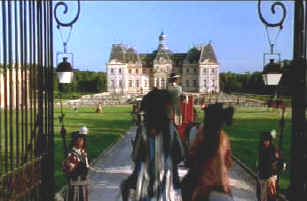

|
Man in the Iron Mask/C+,A- |
MGM-UAl/1998/144m/ANA,WS 2.35 |
Try as he might, Randall Wallace fails to
instill any excitement or life into this latest adaptation of The
Man in the Iron Mask. The colorful costumes and settings are
trapped in a sluggish script that trips over awkward dialogue.
When it tries to be cavalier, it’s
usually pompous, and often, when it tries to be humorous it’s
too crude. Wallace, as you may know, is the author of the Braveheart script, a film
that certainly exhibited all the flare and dashing quality
absent from The Man in the Iron Mask.
You could probably dub this version of The
Man in the Iron Mask, "The Return of the Three
Musketeers." Much of the exposition is devoted to examining
the lives of the legendary musketeers in their senior years.
This section of the film comes off as pale reminder of the
energy with which Richard Lester infused his two musketeer
adventures. Wallace does not show a deft touch with humor.
 |
| Lush production design without a mega-budget. ©MGM |
The story
of The Man in the Iron Mask revolves around the twins
separated at birth, one France's king, ruling with casual
decadence , the other a prisoner locked away and hidden even
from himself by the iron mask covering his face. There are those
on the periphery of that know of the imprisoned twin, and as
political unrest rocks the foundations of Paris, a plot is
hatched to replace King Louis XIV with the mostly forgotten
prisoner. It's up to the three musketeers, defenders of France,
to succeed in righting a foundering mother country.
The busy details surrounding the
adventure detract from the thrust of a musketeer's sword.
Wallace's action film lacks the robust action and charm from
which other musketeer films have benefited.
Gabriel Byrne plays D'Artagnan as used up and
lovelorn. Whatever happened to the verve that these musketeers
had in youth? John Malkovich plays Athos with typical arch
dialog delivery. I could never believe John Malkovich could kick
my butt in a fight, much less the best of the king's musketeers
and anyone else who might cross his ferocious (sic) path. Gerard
Depardieu has some especially French humorous moments as the
lustful Porthos, pining for the memory of youth's sexual
prowess. Jeremy is an all too pious Aramis.
Which brings us to Leonardo DiCaprio. Fans of Leonardo DiCaprio
will be happy getting a double dose of the young actor playing
King Louis and his twin brother freshly out of the iron mask
Phillippe.
The DVD Video is excellent. The dark interiors have fine shadow detail. The visual star of the DVD is the beautiful exteriors. Scenes in the gardens are lively with colors that pop off the screen. The Dolby Digital 5:1 mix is clear and dialog clean, but surround information is not aggressive.
Wallace is articulate and enthusiastic in his audio commentary. He shares information about actor's acting styles, the problems of production design, and the respect each of the actor's had for one another. In fact, often the commentary has more life and energy than the film. Wallace comfortable Southern speech makes for pleasant listening.
The Feature Archive has articles ranging from Akira Kurosawa to Blonde Bimbos, The Heistmasters and Frank Darabont.

Read about Hollywood's hesitant view of the Vietnam war.
Click on the image for more.
Check out the Movie Poster Archive for short bios and images of Susan Hayward, Kirk Douglas, Katharine Hepburn and many more. This month's featured star is Clark Gable.

Imaging
Science Foundation
promotes proper standards in home theater viewing. ISF trained
technicians offer monitor calibration services to consumers. The
difference in a properly calibrated monitor can be
astounding. Click on the image to find an ISF member near you.
HOT
LINKS
National
Preservation Film Board
Learn about what this
organization is doing to preserve our film heritage. Want to
know the guidelines for proper handling of film? This is the
place.
Home
Theater Reference Reviewing System

When you read a DVD review it's of utmost importance to know
what equipment is being used to evaluate quality. Click on the
projector to find out more.